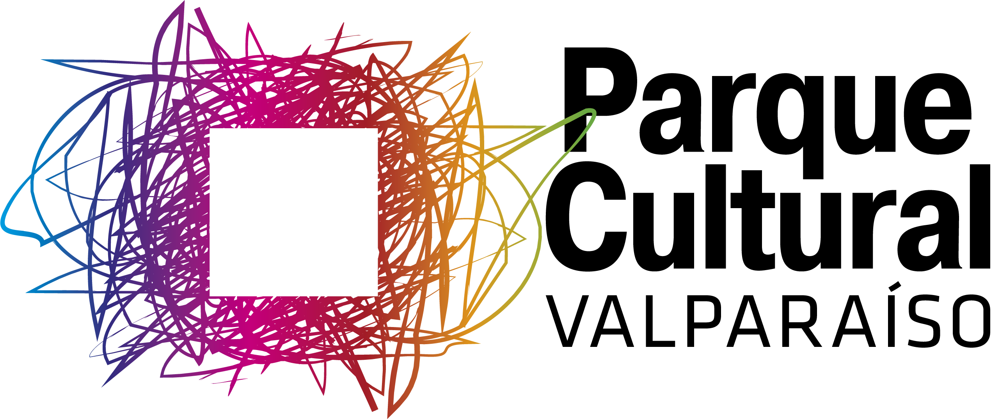

Las formas fractales, que durante mucho tiempo se consideraron meras “monstruosidades” geométricas e inaplicables divertimentos matemáticos, subyacen en fenómenos y estructuras tan variadas como la distribución de las estrellas del Universo, la ramificación alveolar de los pulmones, la frontera difusa de una nube, las fluctuaciones de precios en un mercado y aun, en la frecuencia de repetición de las palabras de este texto.
-…”Las nubes no son esferas, las montañas no son conos, las costas no son círculos, como la corteza de un árbol no es plana ni un rayo viaja en línea recta…” (Mandelbrot, 1984)

En 1975 Benoit Mandelbrot denominó fractales (del latín fractus, irregular) al conjunto de formas que, generadas normalmente por un proceso de repetición, se caracterizan por poseer detalle a toda escala, por tener longitud infinita, por no ser diferenciables y por exhibir dimensión fraccional.
Los fractales son sin duda alguna parte fundamental del nuevo lenguaje de la complejidad y el caos, […] habitan en esa frontera tan sutil entre el orden y el desorden. (Citas del texto “Fractus, fracta, fractal” de Vicente Talanquer)

Proyecto de creación e investigación basado en el cruce interdisciplinar entre artes visuales, poesía y matemáticas. Los fractales son el espacio de cruce interdisciplinar, en tanto modelo de observación de la realidad. Su objetivo final es la realización de un grupo de obras, basadas en la observación de las formas complejas, que den cuenta de una reflexión conceptual, textual y plástico visual que plantee una posibilidad de comprensión crítica de la realidad usando como lente de observación el modelo fractal. El conjunto de obras se expondrán en espacios virtuales de exhibición de artes visuales y espacios académicos

Los fractales son el espacio de cruce interdisciplinar, en tanto modelo de observación de la realidad. Su objetivo final es la realización de un grupo de obras, basadas en la observación de las formas complejas, que den cuenta de una reflexión conceptual, textual y plástico visual que plantee una posibilidad de comprensión crítica de la realidad usando como lente de observación el modelo fractal. El conjunto de obras se expondrán en espacios virtuales de exhibición de artes visuales y espacios académicos
Fractal curatorial
Del origen. Haber observado, haber tocado, haber escuchado. Son los helechos, es el roquerío, es la cornamenta. Es el follaje reflejado en sus raíces. El centro de la academia universitaria, reencontrado en un instante, cuando las disciplinas se tocaron las manos buscándose. El arte, encontrándose en la ciencia; la ciencia, buscándose en el arte; la palabra, a la escucha. Recordarse, aprenderse, reenviarse. Tres rostros frente a frente.
Burbujas en el mar. Del mismo modo en que el agua corre y se abre paso, se arremolina y se desenlaza, rodea piedras y pueblos, jugamos con el aire y con el cuerpo (con las palabras), nos apoyamos en el flujo de la imaginación ramificada, tensos como ramas, remecidos de profundidad como raíces, buscadores de altura (como ramas), y salimos a respirar, a inhalar más caminos que dibujaron figuras. Del mismo modo.
Grillo. Si todo fluye, entonces todo es otra cosa. Y él canta sin descanso; no lo sabe, canta y no se cansa, se oculta y sigue cantando. Y ahí nosotros. Sin descanso. En la intemperie de lo mismo de las cosas. De las cosas que son otras cosas. Del abismo de lo mismo. Entonces no se cansa, es flujo entonces: superficie y hondura, texturas insondables, o bien transitables y habitables, que son gotera y son grillo, y son entonces lo mismo.
La palabra. Se parece a un dibujo sin destino, a una voluntad desarraigada que sin embargo continúa, a una caminata sin derrotero por las más diversas superficies; porque ella también es pura superficie; aire, lengua, gesto, chasquido, ruido blanco que no se conforma; se quiere derramada en saliva o en tinta o en soplido o en pixeles, se siente primera piedra, se sueña fundaciones; ella, que es tan parecida al vacío de Dios.
El número. Inherente al latido de cuanto somos y de cuanto podríamos ser y de cuanto nos circunda y de cuanto nos cerca, numen o volumen, proporción de lo desproporcionado, rostro que gesticula, que gesticula, que gesticula, ha nacido y nos ha nacido. Pero, si hacer la cuenta es hacer un cuento, ¿cuál es el cuento que se cuenta? ¿El que nos duplica o nos multiplica? Si pedimos cuenta, no nos damos cuenta.
Escultura. Un modo de respirar y de caminar por el mundo, un modo de hacer mundo, un mundo por despertar. Adelantada es la forma; erguida es la figura; el recuerdo, persistente hacia la otra forma, anhelante de más figura. Mirar lo mismo y ver lo distinto, esculpir será escuchar maderas y metales, será presentir las piedras y adivinar la arcilla, será quebrarse todo eso, todo tan fractal, siempre fractal y siempre.
***
Equipo de trabajo:
Y lo mismo es fractal es un proyecto interdisciplinario en el que participaron académicos UC de las facultades de Letras, Artes y Matemáticas de la misma universidad. El equipo ejecutor lo integraron Roberto Onell, Luis Prato y Duvan Henao. El equipo de académicos de la Facultad de Matemáticas fue integrado por Mario Ponce, Godofredo Iommi y Jan Kiwi (coordinado por Duvan Henao, quien recientemente es académico de la Universidad de O'Higgins). Agradecemos el impulso de este proyecto a Gonzalo Leiva, ex profesor del Instituto de Estética de la Facultad de Filosofía UC.
Luis Prato
artista visual
(Facultad de Artes)
Godofredo Iommi
matemático
(Facultad de Matemáticas)

Roberto Onell
poeta
(Facultad de Letras)
Mario Ponce
matemático
(Facultad de Matemáticas)

Duvan Henao
matemático
(Facultad de Matemáticas)
Jan Kiwi
matemático
(Facultad de Matemáticas)
Proyecto apoyado por Facultad de Artes. Facultad de Letras. Facultad de Matemáticas. Bibliotecas UC.
Proyecto financiado por el concurso ArTeCyH de la Dirección de Arte y Cultura de la Vicerrectoría de Investigación de la P. Universidad Católica de Chile
